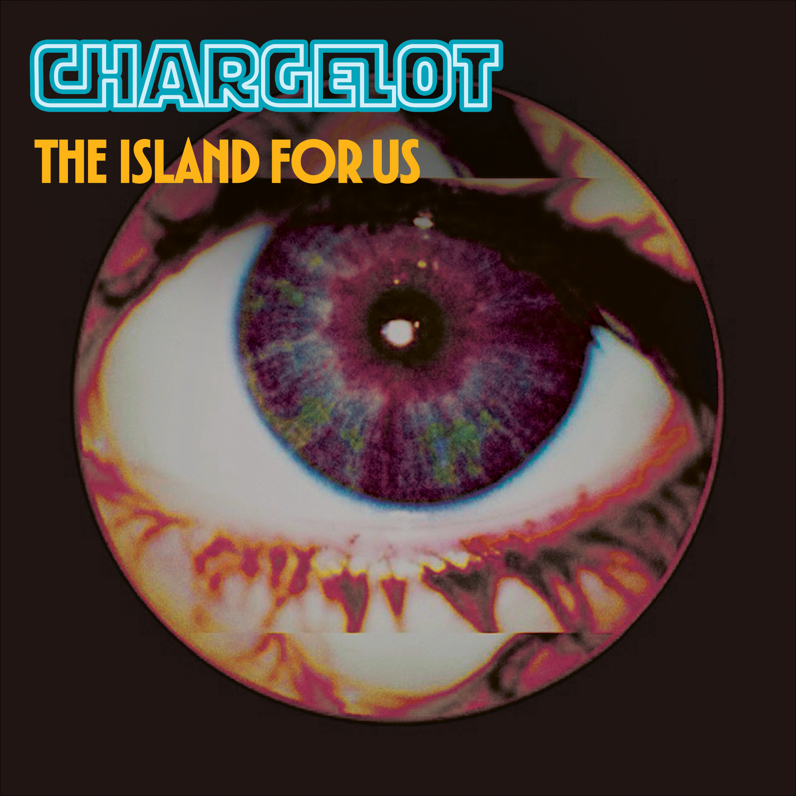
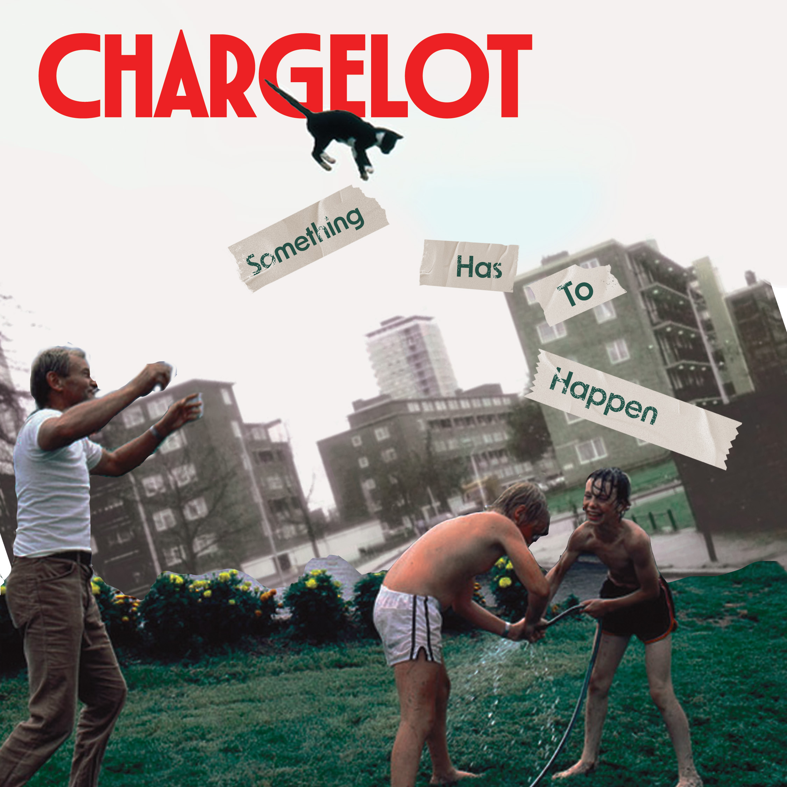
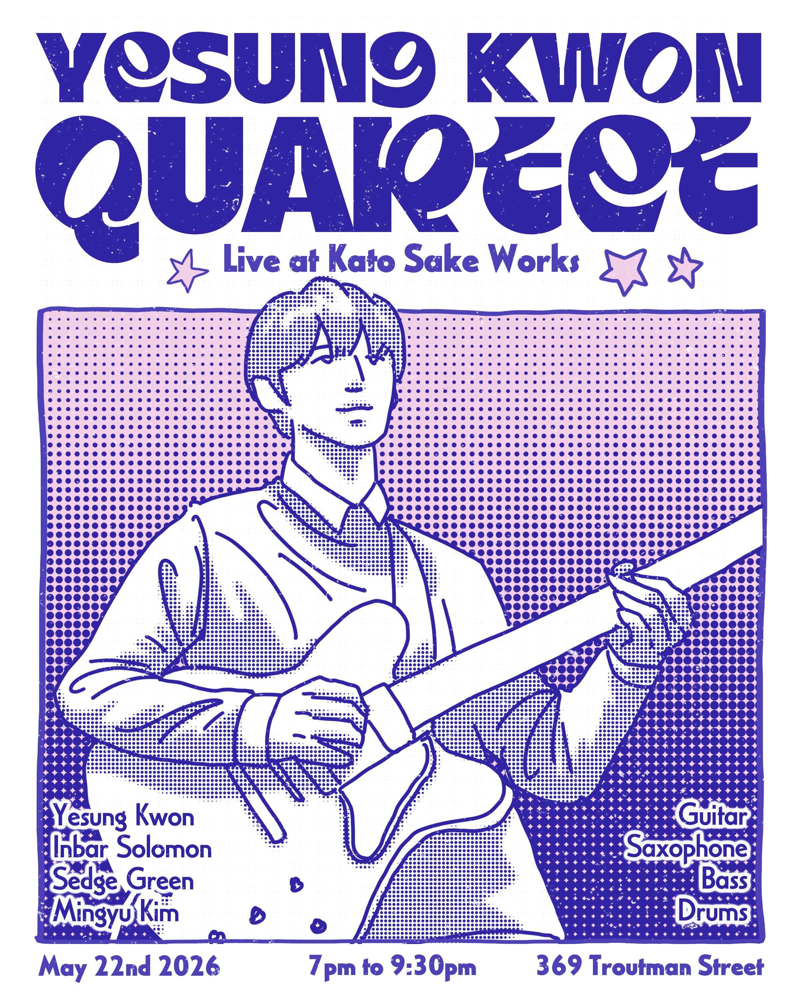
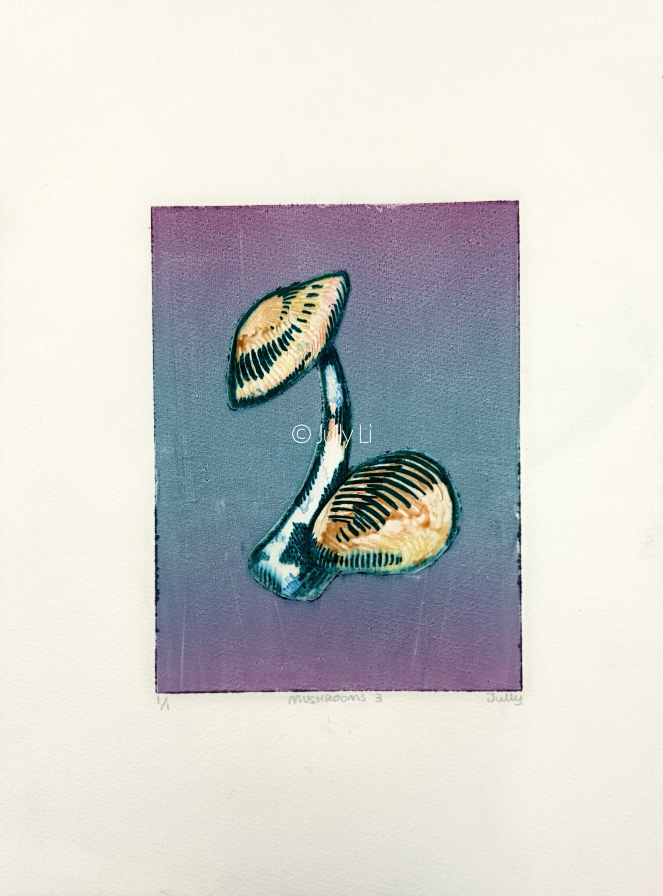
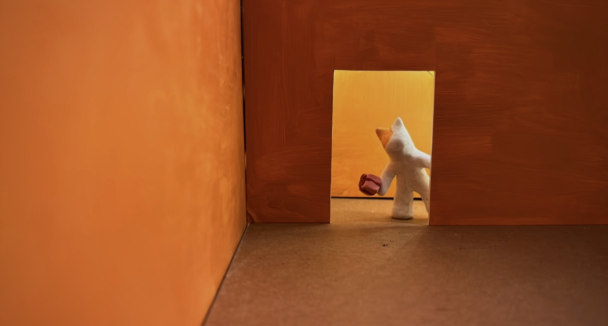
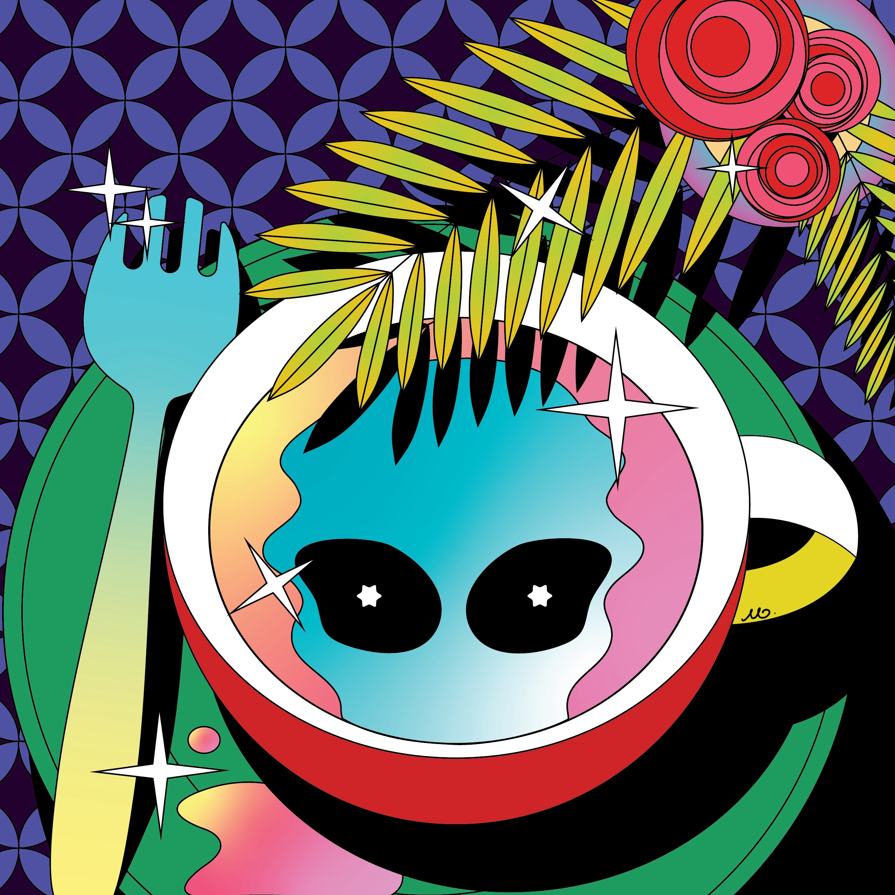

Project Overview
/ 02 — OTHER WORKS
A denser view of posters, album systems, illustration studies, printmaking, and interactive work.






/ 03 — ABOUT
Brooklyn, NYCI'm Jully, I'm an artist and designer based in Brooklyn. My work spans branding design, graphic design, UI/UX, illustration, and physical computing, I use my design to tell stories.
I care about creating experiences that feel clear, tactile, emotional, and visually memorable, whether that lives in a brand system, an interface, a poster, or an interactive installation.
Available for freelance and collaborative projects. Let’s talk.